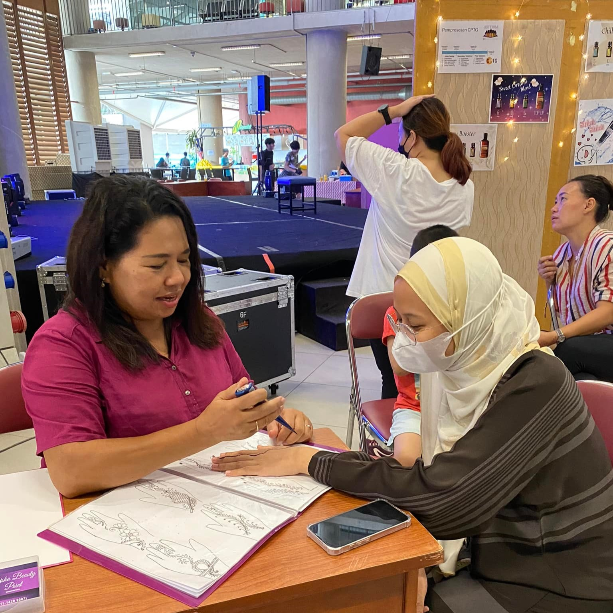
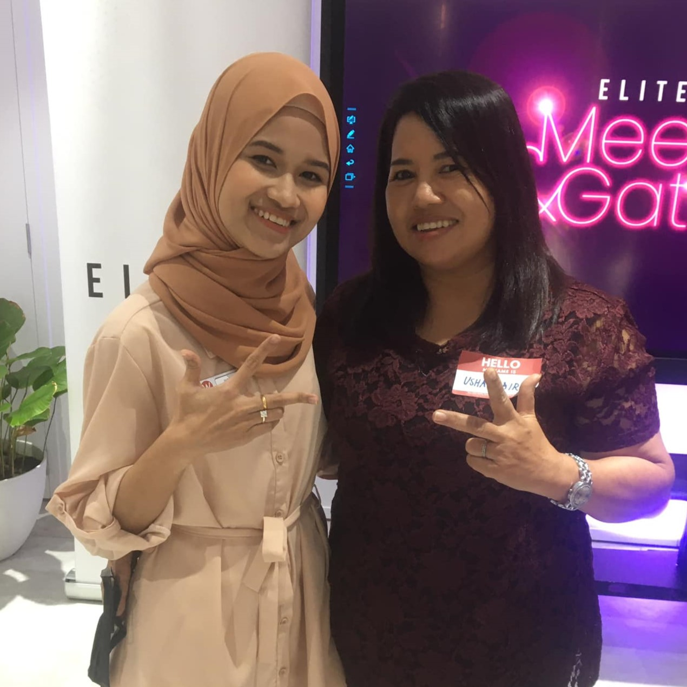
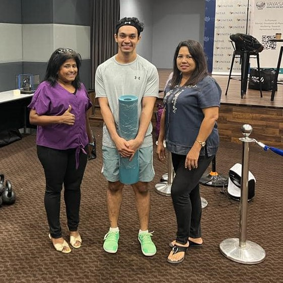

My Journey: How Usha Beauty Point Became My Passion and Purpose
 Usha Beauty Point is more than just a business to me—it’s the embodiment of my passion and purpose. My journey into the beauty industry began long before I opened my beauty space. I’ve always been drawn to the transformative power of beauty treatments, whether it’s a haircut that boosts someone’s confidence or a facial that brings out a natural glow. From a young age, I realized that beauty was about more than skin deep—it was a way for people to connect with themselves and the world around them in a deeper, more meaningful way.
 For years, I dreamt of owning a beauty business, imagining a space where clients could receive treatments that catered to their individual needs. But turning that dream into reality took time and determination. I had to learn the ropes of business, develop my skills, and find the right people who shared my vision. It was a challenging process, but the idea of creating something truly special kept me going. I knew I had something unique to offer—my commitment to individualized care and making beauty a personal experience for every client.
 When I finally opened Usha Beauty Point, it was like a dream come true. The space I created wasn’t just a beauty salon—it was a sanctuary. A place where clients could come to relax, unwind, and, most importantly, feel like they were the center of attention. I focused on ensuring that every treatment I offered was tailored to the individual, and I made it a priority to listen to my clients' needs and desires. This personal touch became the hallmark of my business, and it helped set Usha Beauty Point apart from other beauty businesses.
Today, Usha Beauty Point continues to be a reflection of my passion for beauty and my commitment to individual care. The journey hasn’t always been easy, but it has been incredibly fulfilling. I’m proud of the space I’ve created and the community I’ve built around it. The future is bright, and I look forward to continuing to serve my clients with the same passion and care that has defined my business from the very beginning. Usha Beauty Point is more than just a dream—it’s my purpose.